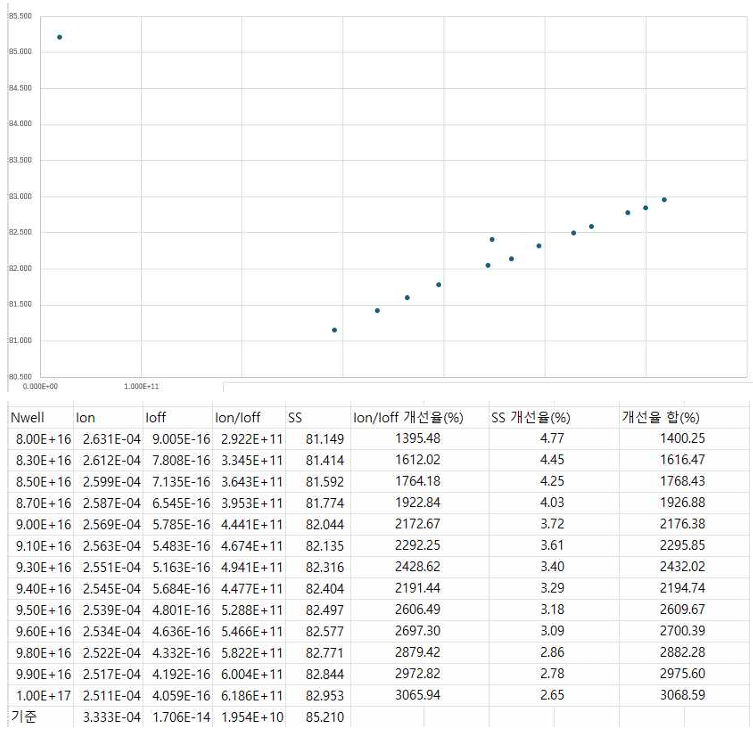
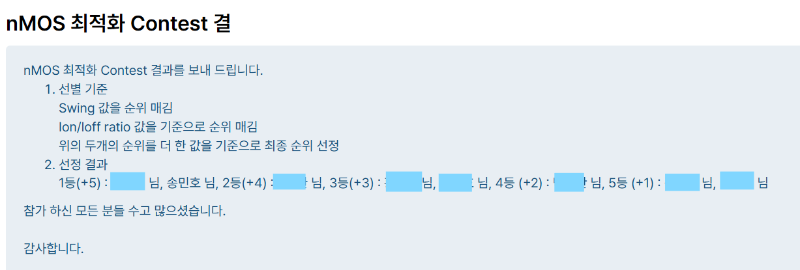
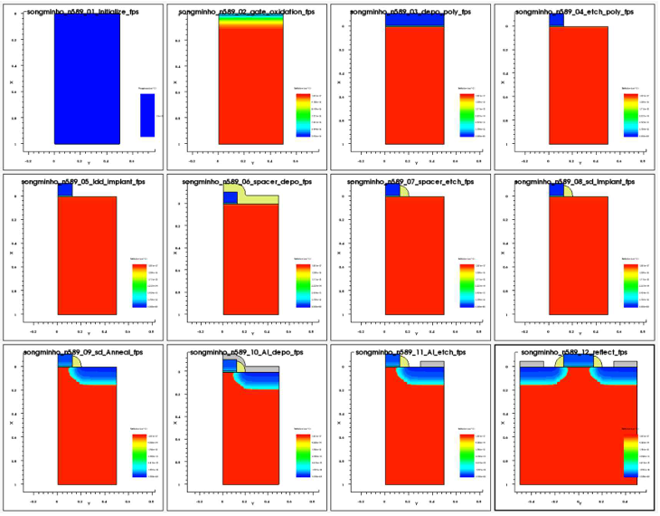
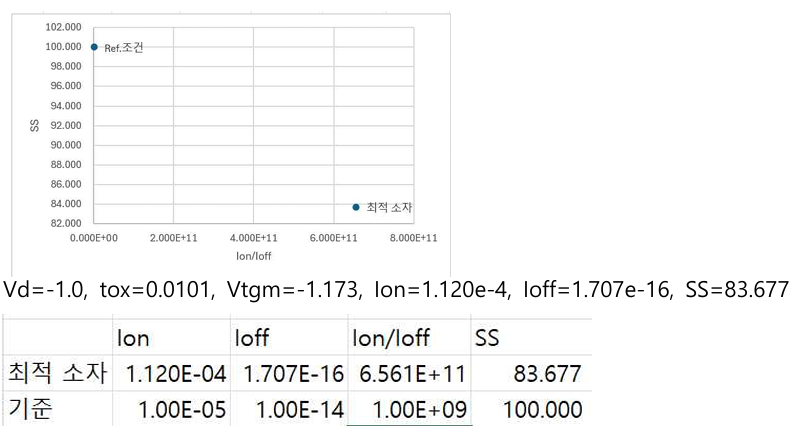

6.186 × 10¹¹
Optimized NMOS Ion/Ioff
NMOS Optimization & PMOS Process Conversion
기준 NMOS 공정의 성능을 최적화하고 동일 공정 흐름을 PMOS로 변환한 뒤, 5개 공정 변수와 전기적 특성의 관계를 비교한 개인 프로젝트입니다.

01 / OVERVIEW
공정 조건 변화가 Ion, Ioff, subthreshold swing과 같은 소자 지표에 미치는 영향을 Sentaurus TCAD로 추적했습니다. NMOS에서는 주어진 공정 구조 안에서 성능을 높이는 것이 목표였고, PMOS에서는 극성과 도핑 조건을 변환한 뒤 공정 변수 최적화를 다시 수행했습니다.
02 / METHOD
기준 NMOS 공정 구조와 전기적 특성을 확인하고 비교 지표를 정의했습니다.
공정 변수를 단계적으로 변경하며 구조와 I–V 특성의 변화를 비교했습니다.
기준 공정을 PMOS로 변환하고 5개 공정 변수를 최적화했습니다.
03 / RESULTS
Optimized NMOS Ion/Ioff
Optimized NMOS SS
Final PMOS Ion/Ioff
최종 PMOS 결과는 |Ion| 1.120 × 10⁻⁴ A/µm, |Ioff| 1.707 × 10⁻¹⁶ A/µm, SS 83.677 mV/dec, Vtgm −1.173 V였으며 설정한 3개 목표를 충족했습니다.

교과목 내 공동 1위로 확인된 결과입니다.

극성과 도핑 조건을 변환한 공정 구조입니다.

5개 변수 분석 후의 전기적 특성입니다.
04 / FILES
프로젝트 README, 이미지, 원본 기술 자료
VIEW GITHUB REPOSITORY ↗공정 설계, 변수 분석, 전기적 결과를 정리한 보고서
VIEW FINAL REPORT ↗